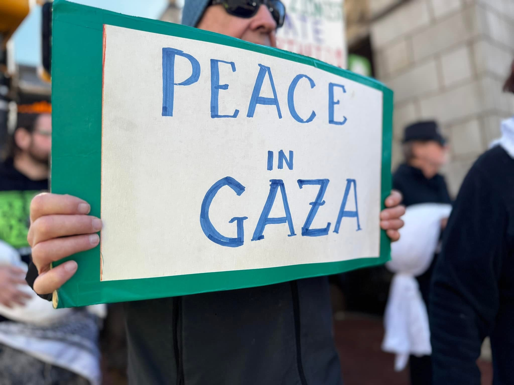
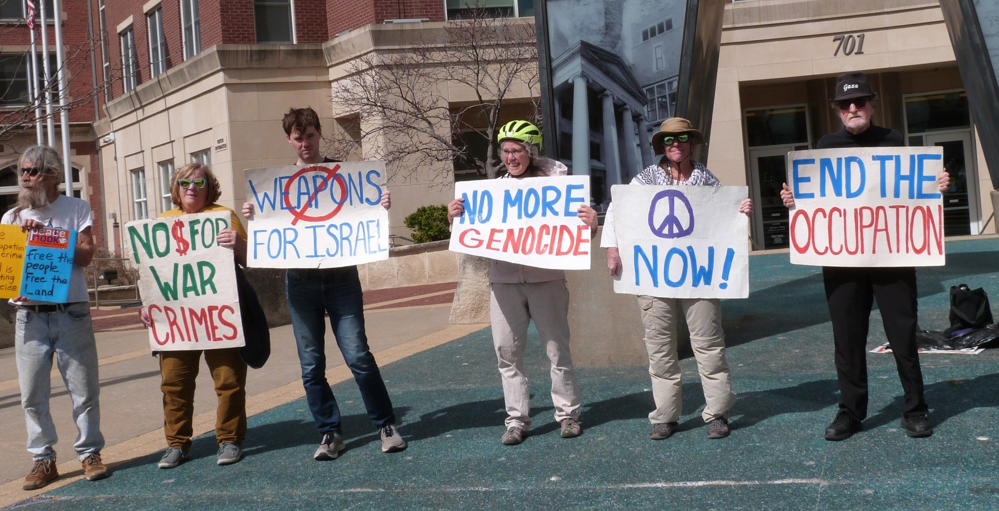
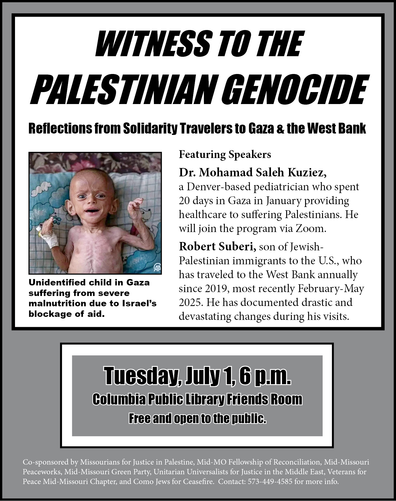

Weekly March for Palestine
Join us every Saturday, 2:00 PM, at Speakers Circle, for a march calling for a ceasefire and an end to the Occupation of Palestine.
Daily Vigils
Join us every day from 12:15 - 12:45 PM at the Keyhole in front of Columbia City Hall. We hold signs calling for the end of the Genocide in Palestine, an end of the tyranny of the current administartion, and the embracing of diversity within our communities.
Witness to the Palestinian Genocide
Join us on July 1st at 6:00 PM for a teach-in about the Palestinian Genocide from two speakers who have first-hand experience on the ground in the region.
Palestine Kite Festival
Join us on July 12th from 5-7 PM for a night of family-friendly fun in support of the people of Palestine!